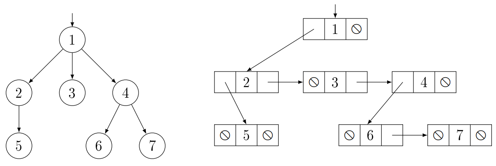

Az általános fáknak a bináris fákkal ellentétben tetszőlegesen sok gyereke
lehet.
Így a csúcshoz tartozó részfák száma egyenlő a gyerekek számával, nem lehet üres részfa.
Bármelyik
csúcs gyerekeinek a száma tetszőlegesen növelhető. A bináris fákhoz hasonlóan itt is értelmezzük a
gyökércsúcs és a levélcsúcs fogalmakat.
Általános fák ábrázolásai:
Láncolt ábrázolása:
Az általános fák természetes ábrázolási módja a bináris láncolt reprezentáció. A
fa
minden csúcsában két mutatót tárolunk, az első gyerekére mutató pointert, és a következő testvérére
mutató
pointert. Ha a csúcsnak nincs gyereke, azaz levélcsúcs, akkor az első gyerekére mutató pointer
nullpointer, ha pedig a csúcs a jobb szélső csúcs, azaz az utolsó testvér, akkor a következő
testvérére
mutató pointer nullpointer.
| $Node$ |
$+child1, sibling : Node^*$
$+key : T$ |
$+Node() \{ child1 := sibling := \emptyset \}$
$+Node(x:T) \{ child1
:=
sibling := \emptyset ; key := x\}$ |
- $child1$ az első gyereke (bal gyereke)
- $sibling$ a következő testvére (jobb testvére)
Egy csúcs, akkor levél csúcs, ha $p \rightarrow child1 = \emptyset$. Egy csúcs,
akkor
utolsó testvér, ha $p \rightarrow sibling = \emptyset$.
Zárójelezett, szöveges ábrázolásai:
A szöveges (zárójeles) reprezentációban az általános fáknál a gyökeret előre
szokás
venni. Így pl. az $\{ \space 1 \space [ \space 2 \space (5) \space ] \space (3) \space [ \space 4
\space (6) \space (7) \space ] \space \}$ általános fában az $1$ van a gyökérben, a
gyerekei
a $2$, a $3$ és a $4$ kulcsú csúcsok, a hozzájuk tartozó részfák pedig sorban a $[ \space 2 \space
(5) \space ]$, a $(3)$ és a
$[ \space 4 \space
(6) \space (7) \space ]$.

Általános fák bejárásai:
preorder:
A bináris fák bejárásánál látott preorder bejárás majdnem teljesen megegyezik az
általános fáknál használatos preorder bejárással, annyi különbséggel, hogy $child1 \sim left$ és
$sibling \sim right$.
|
$t \neq \emptyset$ |
| $process(t)$ |
| $preorder(t \rightarrow child1)$ |
| $t := t \rightarrow sibling$ |
postorder:
Az általános fák postorder bejárása nagyban hasonlít a bináris fák inorder
bejárásához, annyi különbséggel, hogy $child1 \sim left$ és $sibling \sim right$.
|
$t \neq \emptyset$ |
| $postorder(t \rightarrow child1)$ |
| $process(t)$ |
| $t := t \rightarrow sibling$ |
Gyakorlati alkalmazása:
Akkor használjuk, amikor a bináris fa nem alkalmazható, mert nem adható felső
korlát
a gyerekek számára, ezáltal nem tudhatjuk előre, hogy hány mezőt kell lefoglalni. Továbbá, ha
korlátos
is a gyerekek száma, de ez a korlát nagy érték és a legtöbb csúcsnak kevés gyereke van, akkor
jelentős
mennyiségű memóriát veszítenénk a bináris fával.